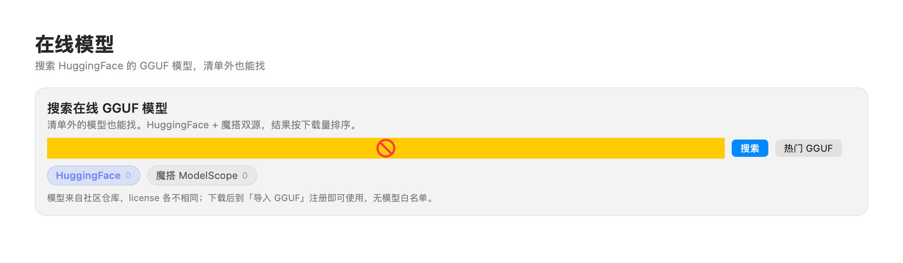
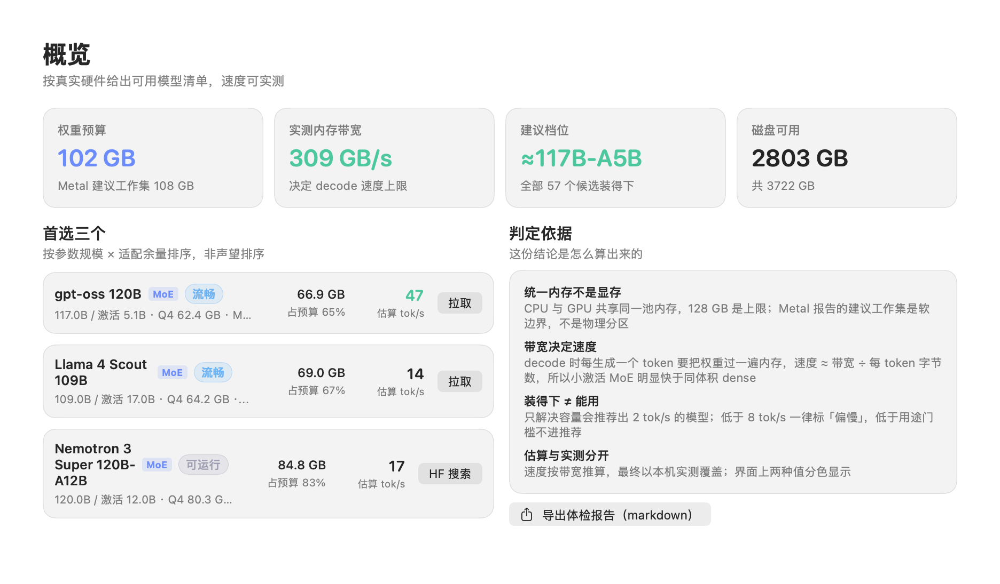
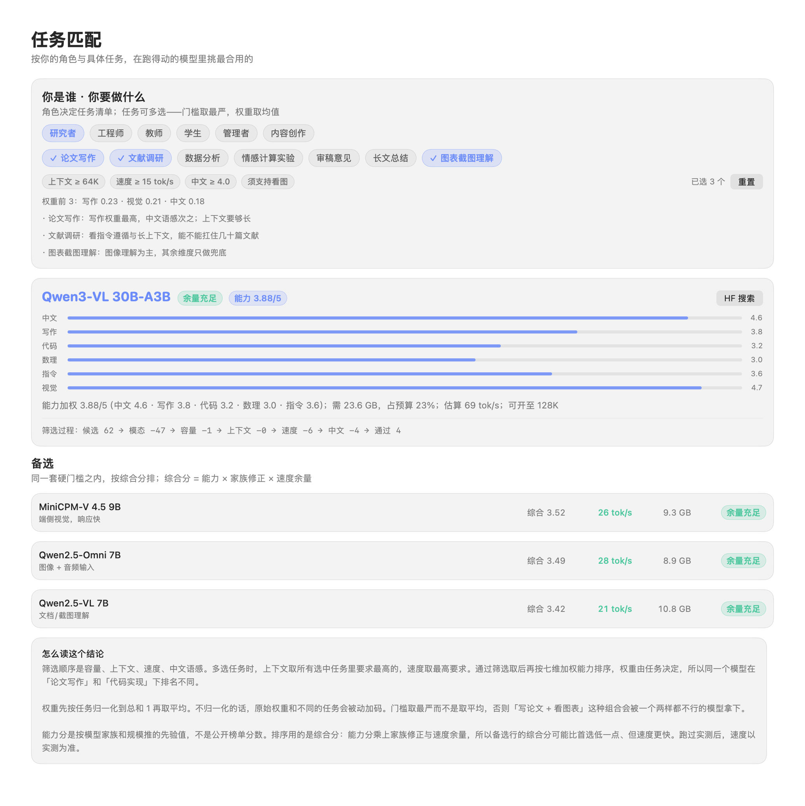
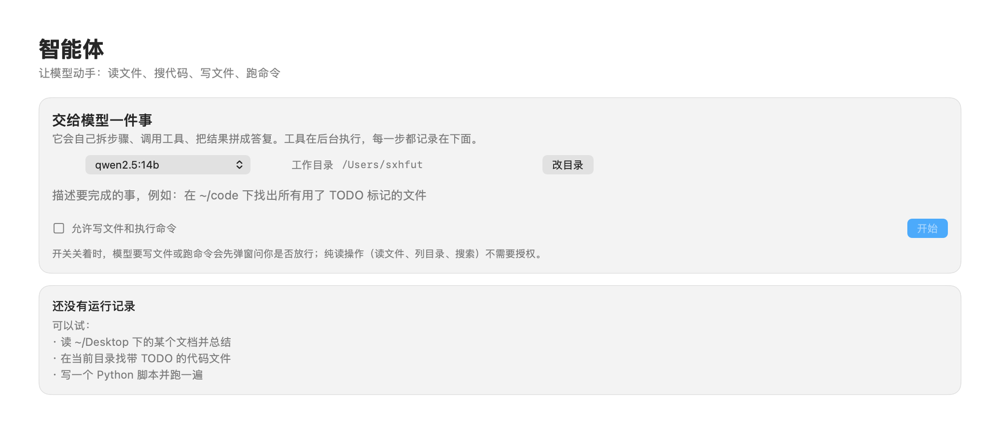

按真实硬件给出可用模型清单与速度，结论背后每一个数字都可复算
本机大模型选型顾问：把「显存够不够」的粗略判断，拆成预算、需求、上下文、带宽、能力分五步可算的判定。免费、开源、可离线。
网上按「显存够不够」列的清单，把权重体积当成唯一门槛。它忽略了三件事：KV cache、上下文长度、内存带宽。
70 GB 的模型开 30K 上下文，KV cache 会再吃掉几十 GB 余量，预算瞬间腰斩。
每生成一个 token 都要把权重从内存读一遍。带宽不够，模型再强也是龟速。
不是「都能装」就行，而是「装得下、跑得快、干得了你的活」——三者缺一不可。
给定机器和任务，给出一个结论，以及结论背后的每一个数字。所有计算在本机完成，不联网。
速度这一行是整个工具的核心。MoE 只读被激活的专家，0.45 是实测拟合的效率系数，不是理论峰值。三条实现约束都是踩坑定下的：MoE 激活占比不钳下限、GGUF 数组按真实元素数跳过、估算值可被实测覆盖。
内核是 Rust 纯逻辑（可离线编译、可单元测试），外层分 Tauri 桌面、浏览器兜底、命令行三种入口，共用同一份前端。
从探测硬件到选型、下载、导入、实测、对话，覆盖本地模型使用的全链路。
统一内存 / Metal 工作集 / 实测带宽 / 磁盘，算出这台机器的权重预算，并标注探测来源。
12 类任务、6 个角色可多选，合并成一道筛选门槛，逐项列出每道门槛砍掉多少候选。
拖入 .gguf 或整个目录，自动识别分片与投影器，改模型名，批量注册进 Ollama。
对已装模型跑真实生成，记录 tok/s，用实测值覆盖估算值，界面用颜色区分来源。
直接调本机 Ollama 模型，支持图片输入；智能体可读文件、搜代码、写文件、跑命令。
已装模型列表、量化/参数量/上下文标签，多选删除，磁盘体检与孤儿 blob 回收。
MindModel 只关心「这台机器能不能跑」，不替你圈定该用谁家的模型。三层来源各司其职：内置清单负责「装得下、跑得快」的精准判断，在线搜索负责「清单之外」的广撒网，GGUF 导入负责「任意 .gguf 都能进」的兜底。
| 来源 | 是什么 | 刷新方式 | 适合谁 |
|---|---|---|---|
| 内置精选目录 | 79 条手工标注的模型清单，含体积 / KV / 实测带宽等适配数据 | 手工维护（适配数据无法自动生成） | 想要「可复算判断」的大多数人 |
| 在线搜索 | 并行搜 Hugging Face + ModelScope，按下载量排序，实时拉取 GGUF 仓库 | 每次搜索实时请求，无本地缓存 | 想找清单之外、最新发布模型的人 |
| GGUF 导入 | 拖入任意 .gguf 或整个目录，自动识别分片与投影器 | 即拖即用，无模型白名单 | 手头已有 .gguf、或想自定义模型的人 |

内置 79 条的独特价值在于手工标注的适配数据（体积 / KV / 速度档位），这些数据来自真实硬件的实测与踩坑，无法靠脚本自动生成。清单之外的模型，交给「在线搜索 + 无白名单导入」两条路覆盖。
导入页明确：任意 .gguf 均可导入，不设模型白名单。只要文件在手，就能拖进来识别、注册、实测——判断权在你，不在工具。
浅色界面，判定依据、门槛账目、筛选过程全部摆在明面上，每一个结论都能追溯。



「能编译」≠「支持」。每个平台都标注验证状态，不把没实测的写成已支持。
| 平台 | 探测 | 推理后端 | 入口 | 状态 |
|---|---|---|---|---|
| macOS（arm64/x86_64） | Metal + sysctl | MLX / llama.cpp / Ollama | Tauri + CLI + 浏览器 | 已实测 |
| Windows x64 | DXGI + NVML | CUDA / Vulkan / CPU | Tauri（CI 编译） | 需实机验证 |
| Linux x64 | sysfs + NVML | CUDA / ROCm / Vulkan | Tauri（CI 编译） | 需实机验证 |
| 麒麟/统信（鲲鹏/飞腾） | /proc + sysfs | llama.cpp CPU(NEON) | CLI + 浏览器 | 需实机验证 |
| 龙芯 LoongArch64 | /proc + sysfs | llama.cpp CPU(LSX/LASX) | CLI + 浏览器 | 风险最高 |
| 海光 x86_64 | 同 Linux x64 | CPU / DCU(ROCm 变体) | CLI + 浏览器 | 需实机验证 |
下载对应平台的安装包（.dmg / .exe / .deb / .AppImage）。
# macOS 本地构建
./build.sh无需安装，起一个本地服务，浏览器打开即用。
cd ui && npm install && npm run build
cd ../rust
cargo run -p mindmodel-server
# 打开 http://127.0.0.1:8462一条命令拿到结论，适合脚本与远程机器。
cd rust && cargo build --release
./target/release/mindmodel scan
./target/release/mindmodel task --tasks paper,code不会。MindModel 是「选型与调度顾问」，推理交给后端（Ollama / llama.cpp / MLX）。它告诉你跑什么、跑多快、为什么，下载和推理交给成熟引擎。
七维能力分（中文/写作/代码/数理/指令/视觉/长文）是编辑先验，按模型家族与规模推导，用于「这台机器都跑得动」的候选之间排序，不是 MMLU 之类的基准分数，不能跨硬件比较。
不会。所有计算在本机完成，模型清单是内置的静态数据，没有遥测、没有云端上传。
清单里有 FLUX、SDXL 等图像模型，但 Ollama 跑不了图，需要 ComfyUI 或 stable-diffusion.cpp 作为独立后端。应用会检测并引导安装，不虚标「点一下出图」。